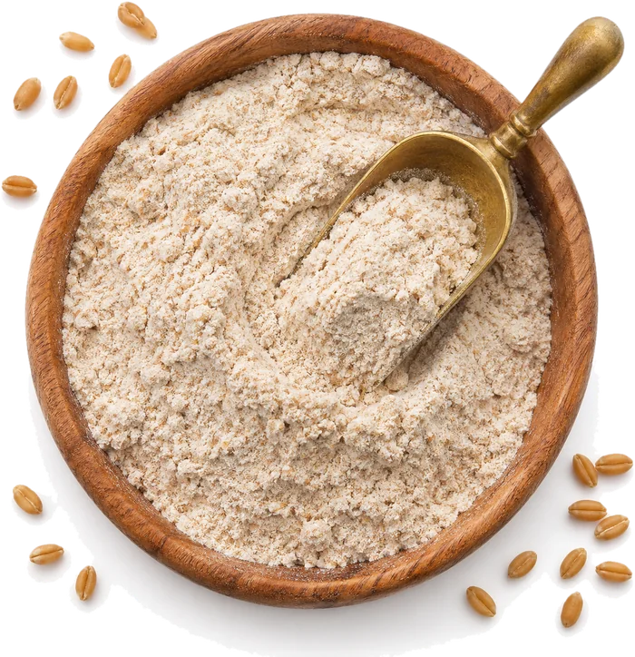

Milled yesterday. At your door today.
Fresh chakki atta from MP Sharbati wheat, milled slowly on natural stone.




Why Atulyash
- 100% whole wheat
Made with single-origin MP Sharbati wheat.
- Chakki fresh
Ground slowly on natural stone chakkis.
- Chokar kept in
The bran stays in the atta.
From the kitchen

How fresh should your atta really be?
Watch on YouTube
Does the way atta is ground really matter?
Watch on YouTube
From wheat to fresh atta
Watch on YouTube
At the everyday table.


We keep changing everything around us. Our skincare, our cooking oil, even our utensils, because we research what is best for our family. So why don't we stop and think about our atta? Its quality, where it comes from, how it is made. We just take their word for it.
The Atulyash way.
From the wheat to your door, in six steps.
- 01
The wheat
Single-origin MP Sharbati. Never blended with other varieties.
- 02
The cleaning
Cleaned in several stages. Dust and husk float away.
- 03
The stone
Natural stone chakkis. No emery stone, no steel rollers.
- 04
The packing
Packed with minimal handling. Nothing added, nothing removed.
- 05
The milling day
Milled in small batches the day before, delivered the next morning.
- 06
The riders
We deliver with our own riders, right to your door.
Choose your pack
₹120 a kg. Packed in 2 kg pouches.
- 2 kg₹240Order 2 kg
- 4 kg₹480Order 4 kg
- 6 kg₹720Order 6 kg
About ₹3.60 a roti.
Freshly milled. Delivered weekly.
We deliver across Delhi NCR. Check your PIN code below.